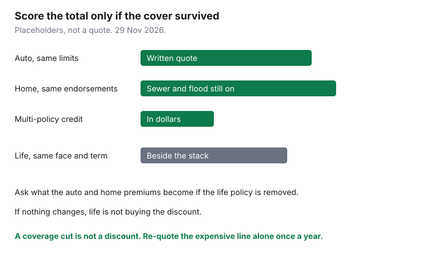

Insurance · Canada
Multi-Policy Discounts Across Auto, Home, and Life in Canada: Stacking Without Blind Spots
A multi-policy discount is a percentage off a premium you agreed to pay. It is not proof the household is paying less than it would with the same cover split across two insurers. People move a life policy onto a property insurer’s quote, or drop a sewer-backup endorsement, so the screen can say “you saved 10 percent.” The dollar saving is real only when the coverage is the same and the life policy was actually in the discount. Often it was not. This page is the stack: which pairs discount, when one broker shopping several insurers beats one insurer’s bundle, which coverages get quietly cut, and how to test unbundling the expensive line once a year. It is education. It is not a brokerage recommendation, and there is no national discount rate.
Auto paired with tenant or home insurance, on its own, is already on the bundle worksheet. Loyalty stickers that are really tenure pricing are on the loyalty guide. Two cars on one auto policy are on the multi-car guide. This page is the cross-line version, including life, which those pages do not settle.
Disclosure: Education only. Broker quote portals and term life quote portals are offer types households use to compare prices. Saving Optimizer may earn a commission if partner links are added later. We do not currently claim a partnership with any broker or insurer, and we do not rank them. No discount percentage below is a quote. Ask for the discount in writing. Pages cited were used 29 Nov 2026.
Key takeaways
- Auto plus home is the pair insurers commonly discount. Life is often a different company and a different licence. Ask whether the life premium is inside the discount or only on the same bill.
- A broker can place auto and home with different insurers. A single-company bundle cannot. Compare both structures on the same limits.
- Where basic auto is a public plan — ICBC in British Columbia, MPI in Manitoba, SGI in Saskatchewan — a private multi-policy percentage does not rewrite the public premium. Quote the private optional cover and the home policy on their own.
- A discount that required you to drop sewer backup, lower liability, or shrink a life benefit is not a discount. It is less insurance.
- Once a year, re-quote the expensive line alone, same limits. Keep the bundle only if the total is still lower and the quality score did not fall.
Which product pairs actually discount (auto+home common; life often separate channel)
Property and casualty insurers file discounts for holding more than one of their P&C policies. The common pair is personal auto and a habitational policy: home, condo, or tenant. A second car is a multi-vehicle discount, which is a different filing. Neither filing is required to exist, and neither has a percentage set by the Insurance Bureau of Canada or by a provincial regulator as a consumer entitlement. The Financial Consumer Agency of Canada’s guidance is to compare the coverage. The percentage is the insurer’s current filing. Get it on the quote as a dollar amount, not as a badge.
| Pair | How the discount usually works | What to verify |
|---|---|---|
| Auto + home, condo, or tenant | One insurer, both policies, a filed percentage or a flat amount off one or both premiums. | The percentage, which policy it hits, and whether it survives a claim on one line. The bundle worksheet is the same-cover comparison. |
| Two or more vehicles | A multi-vehicle discount inside auto, not a home discount. | Do not count it twice if the quote already shows it. The multi-car guide covers ICBC, MPI, and SGI. |
| Life added to an auto and home account | Sometimes a small account credit if a life company in the same group issues a policy. Often no credit at all. | Ask: “If I remove the life policy, what happens to the auto and home premiums?” If nothing changes, the life policy is not buying the discount. Shop life on its own merits. |
| Health and dental added to P&C | Rarely the same contract. Sometimes a referral. Sometimes a real multi-product credit. | Same removal test. A health plan that is weak on drugs is not justified by $40 off an auto premium. |
In British Columbia, Manitoba, and Saskatchewan the basic auto product is a public plan. Optional auto cover may be private or public depending on the province and the coverage. A private home insurer’s “multi-policy” offer cannot discount the public compulsory premium. Quote home insurance as home insurance. The ICBC and private optional guide is the B.C. shopping split. Québec’s injury plan is public through the SAAQ; the damage policy is private. A Québec auto-and-home discount applies to the private policies, not to the public injury premium.
Same-insurer vs same-broker multi-carrier shopping
Two structures get called a bundle. They are not the same price.
- Same insurer. One company issues auto and home and applies its discount. Simple billing. One claims phone. You accept that company’s appetite for your postal code, your roof, and your driving record. If they are expensive on home and cheap on auto, the discount may not close the home gap.
- Same broker, more than one insurer. An independent broker can place auto with one market and home with another. You may lose the multi-policy percentage and still pay less in total. You also need to know who handles a claim that touches both, such as a car through the garage. Ask the broker to show the bundled same-insurer total and the split-market total on one page, same liability limits, same deductibles, same endorsements.
The broker versus direct guide is how to keep the auto comparison fair. Use it for the auto column of this worksheet. Direct writers will not shop a competitor. That is not a flaw if their pair is cheaper at the same cover. It is a flaw if you never see the other pair. A broker quote portal is an offer type for the shopping step. The licence still has to be valid in your province. A website that only shows one brand is a direct quote, whatever the marketing says.
Coverage compromises people accept to ‘keep the discount’
The discount is calculated on the premium after the coverage is chosen. If the coverage shrank, you are not comparing last year’s protection. These are the cuts that show up when someone is trying to hold a bundle together:
- Sewer backup or overland flood removed because the bundled home quote was high. The discount does not pay a sewer loss. The water endorsement guide and the overland flood guide are the perils. Put them back on both quotes before you declare a winner.
- Replacement cost changed to actual cash value, or a roof settled on a schedule. The replacement-cost guide is why the cheaper building limit is not a saving.
- Liability cut on auto or home to reach a premium target. A six-figure lawsuit does not honour a bundle percentage. Match the liability limit on every quote. A common household target is whatever you already carry, not a lower number invented to make the discount look larger.
- Deductible raised without a matching rise in the emergency fund. A higher deductible can be a real saving. It is a compromise only when you could not pay it. The home deductible guide under Housing is that arithmetic. Do not raise it only so the bundle screen stays green.
- A life benefit reduced so the monthly outflow, including the P&C discount, “fits.” Life and auto solve different events. Shrinking the death benefit to keep $80 on the auto policy is the blind spot in the title. The needs worksheet comes before the discount conversation.
If the only way to keep the discount is to delete an endorsement you had a reason to buy, decline the discount. Price the full cover at another insurer. The percentage was never the coverage.
Life/health bought through advisors vs P&C direct—do not force a bad fit
Life insurance and living benefits are licensed separately from property and casualty in the provinces. A person who can bind your auto policy may not be allowed to sell you a life policy, and a life-only advisor may not be able to move your home insurance. Forcing both through whoever mentioned the discount produces a policy that exists to decorate a bundle.
Shop life as life. Term versus whole life, and the amount, are already decided on the term guide and the needs worksheet. A term life quote portal is an offer type for that shop. Compare the same face amount, the same term, and the same renewability. Then ask the P&C insurer, separately, whether holding that life policy changes the auto or home premium. If the answer is no, stop trying to combine the purchases. If the answer is yes, write the dollar difference next to the life premium. A life policy that costs $200 a year more, in exchange for $60 off the home policy, is a more expensive life policy. Buy the cheaper life policy unless the contract itself is worse.
Health and dental do not belong in this stack as a sweetener. A weak drug maximum is a care problem, priced on the gap guide. Assuris protects life and health policies at a member insurer: death benefit protection is the greater of $1,000,000 or 90 percent, and health-expense protection is the greater of $250,000 or 90 percent, if that insurer fails. Auto and home sit under a different compensation scheme for property and casualty insurers. A bundle does not move your house policy under Assuris, and it does not move your life policy under the property scheme. Insolvency protection is not a reason to combine them.
Spreadsheet: total household premium vs coverage quality score
One page, four columns, no colour that means “recommended.” You are scoring whether the cover survived, not how friendly the website was.
| Line | Insurer A, bundled | Split markets | Quality flag, both columns |
|---|---|---|---|
| Auto, same liability and deductibles | Quote | Quote | Liability matches. Drivers match. No silent removal of collision. |
| Home or tenant, same building limit | Quote | Quote | Sewer, overland, and replacement cost still present. Deductible is one you can pay. |
| Multi-policy credit, in dollars | The amount on the declarations, not the brochure percentage | Zero, if the policies are split. That is allowed. | Credit did not require a coverage cut. |
| Life, same face and term | Only if this insurer’s life price is the one you would buy anyway | The best life quote, even if it earns no P&C credit | Face amount still matches the needs worksheet. |
| Total | Sum | Sum | Lower total wins only if every flag is still yes. |

Tenure discounts and claims-free discounts are not the multi-policy line. The loyalty guide separates them. If a quote blends “loyalty” and “multi-policy” into one number, ask for the split. You need the split the year you want to move only one policy.
Annual unbundle test on the expensive line only
You do not have to re-shop every policy every year to catch a bad bundle. Shop the line that dominates the total. For many households that is auto. For others, after a water-claim history or an old roof, it is home. Leave the cheaper line in place unless its renewal jumped.
- Forty-five days before the expensive renewal, which is the same cadence as the annual review, ask the current insurer: “If I cancel the other policy, what does this premium become on the renewal date?” That is the value of the discount in dollars.
- Get one same-cover quote for that expensive line alone, from a broker market or a direct writer you do not already use.
- If the alone quote, plus the higher premium on the policy you would keep, is lower than today’s bundle and the quality flags still pass, move the expensive line. Set the new policy to start before the old one ends. No bare day.
- If the bundle still wins, keep it and write down the dollar advantage so next year’s test has a baseline. A discount you have not measured is a story.
- Do not move life on the same afternoon unless the life comparison is finished. Cancelling a life policy to chase an auto discount can require new underwriting you will not pass. That is the blind spot with the largest consequence.
Claims can remove a discount on renewal even when you stay bundled. Ask, after a claim, whether the multi-policy credit survived. If it did not, the unbundle test is due early, not at the next anniversary you forgot to calendar. The test is a spreadsheet. It is not loyalty, and it is not a threat you have to announce. It is the only way to know the percentage is still doing work.
Sources & date stamps
- Financial Consumer Agency of Canada, getting insurance — compare coverage and price; shop around. Used 29 Nov 2026. There is no federal multi-policy percentage.
- Insurance Brokers Association of Canada, ibac.ca — association for independent brokers. A broker can place policies with more than one insurer. Used 29 Nov 2026. Not a discount table.
- Assuris, how am I protected — life and health member companies; death benefit the greater of $1,000,000 or 90 percent; health expense the greater of $250,000 or 90 percent. Auto and home are outside that scheme. Used 29 Nov 2026.
- Public auto plans in B.C., Manitoba, and Saskatchewan, and Québec’s public injury plan, do not take a private-insurer multi-policy percentage on the compulsory premium. Optional and property cover is quoted separately. Discount filings are insurer-specific.
Frequently asked questions
How much is a multi-policy discount in Canada?
There is no national rate. Insurers file their own percentages, most often for auto plus a home, condo, or tenant policy. Ask for the credit in dollars on a same-coverage quote. A life policy often does not change that credit.
Should I move my life insurance to get the auto discount?
Only if the life contract is one you would buy anyway and the P&C saving is larger than any extra life premium. Many life policies are issued by a different company and do not change the auto price. Cancelling an existing life policy can mean new medical underwriting. Do not do that for a small auto credit.
Does the discount apply to ICBC, MPI, or SGI?
A private insurer’s multi-policy credit does not reduce the public compulsory auto premium. Quote private optional auto cover and your home policy on their own merits. The multi-car guide is the public-plan detail.
Is a broker’s split placement still a bundle?
It is one relationship and two insurers. You may give up the percentage and pay less overall. Compare that total with a true same-insurer bundle at the same limits and the same endorsements. Keep whichever total is lower without a coverage cut.
Is this insurance advice?
No. Education only. Broker quote portals and term life quote portals are offer types. We do not claim a partnership with any broker or insurer. Written quotes and the policy wordings control.